Every Undo and Redo in the top bar
"All undo and redo buttons should be at the top bar. And it should be standardised as much as possible in terms of the location and layout. Like how the edit schedule is." · "Review both desktop and mobile too."
These are pictures of the real app. The "after" pictures move the app's own buttons in the page, so they look exactly as the build will. Tap any picture to open it full size.
What I read into your words
- One place, one look. The Undo and Redo pair sits in the top bar where Edit Schedule has it: after the bell, with the words on a desktop and as icons pinned at the right edge on a phone.
- On every page where you can change something Undo takes back: Edit Schedule, the Leave War, Inputs, Quals, Admin and the Logic page. View-only Sched and Help change nothing, so they get no pair.
- The Leave War's pair leaves its Period row and moves up into the top bar.
- On a phone, the Sync chip shrinks to its dot wherever the pair shows, as it already does on Edit Schedule, so the right end of the bar reads the same on every page: dot · bell · Undo · Redo.
- The changes clock stays on Edit Schedule only, beside its pair, as you set it (D171).
- The scheduler board covers the top bar, so its pair stays in the board's own bar, in the same order as Edit Schedule's: Undo, Redo, then History.
- The Tracker's own Undo and Redo move to the top bar too. They still take back the Tracker's own marks and chart edits, because the Tracker keeps its own history. Only their place changes.
Edit Schedule the model
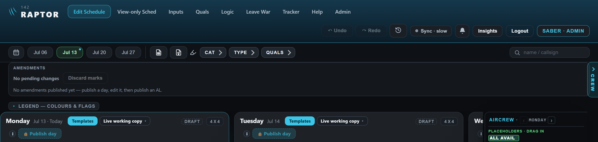
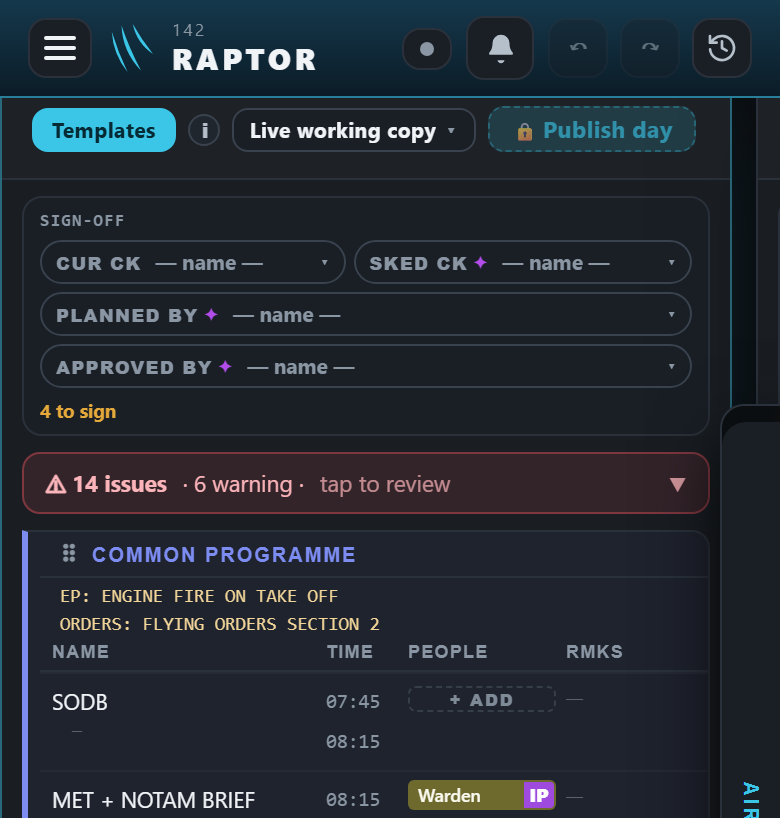
Leave War
Today the pair sits in the war's own Period row. After, it moves into the top bar, and the Period row keeps Period, + New and Viewing as.
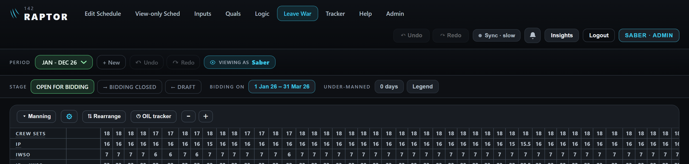
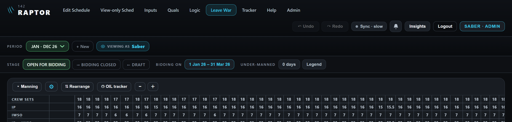
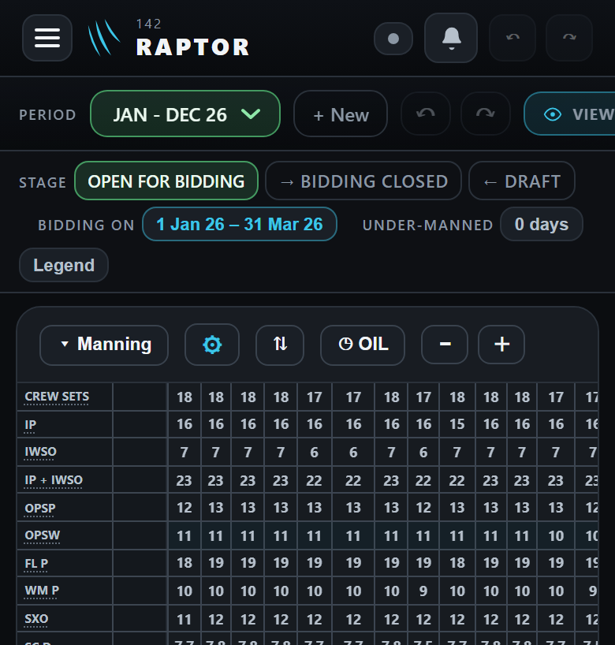
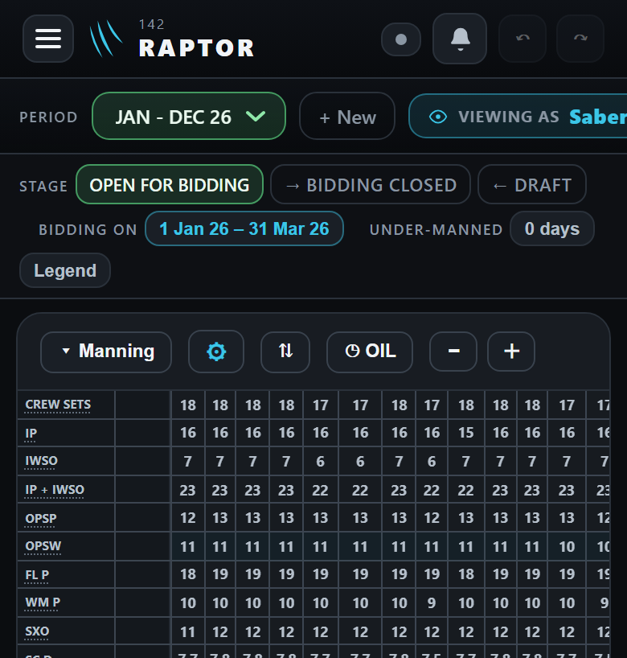
Inputs
Inputs you file here can already be undone today, but only from Edit Schedule. After, the pair is right here.
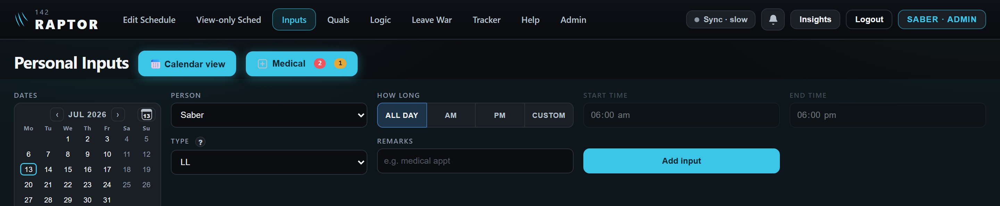
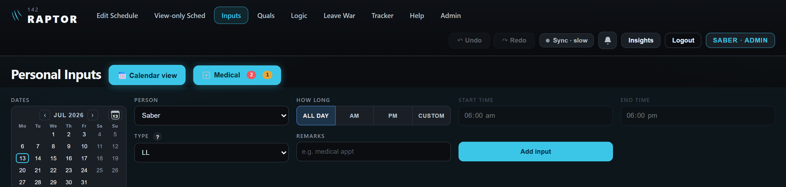
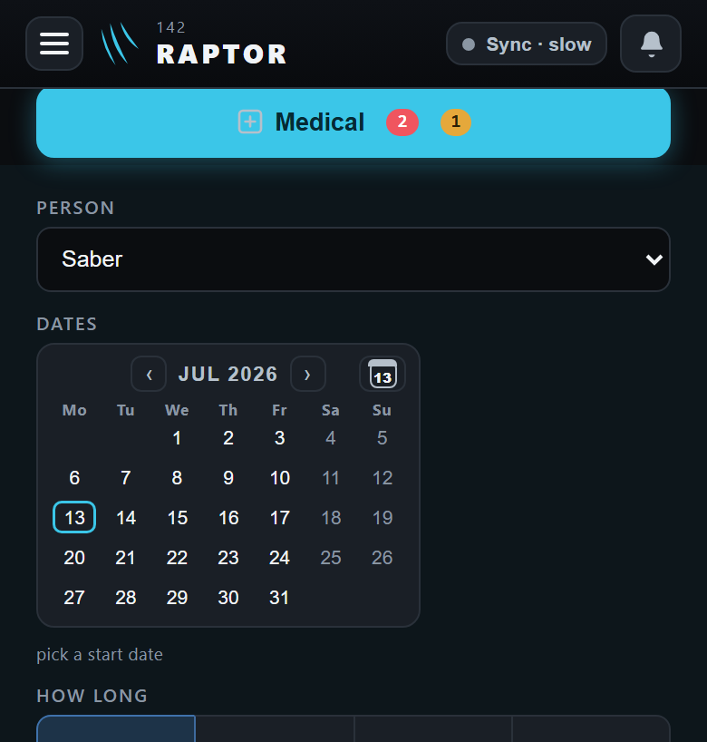
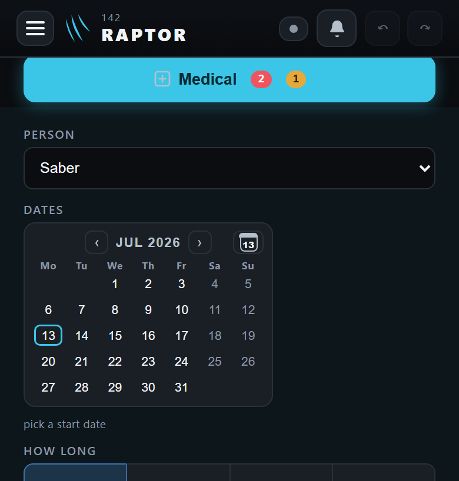
Quals
New with this build: a Quals change (a tick, a CAT, a callsign) can be undone. Today Undo passes over it.
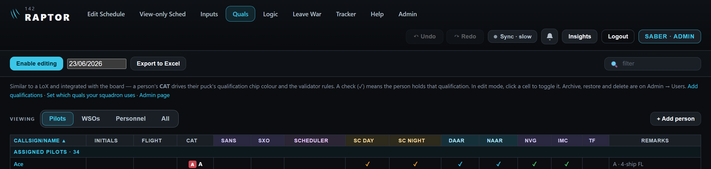

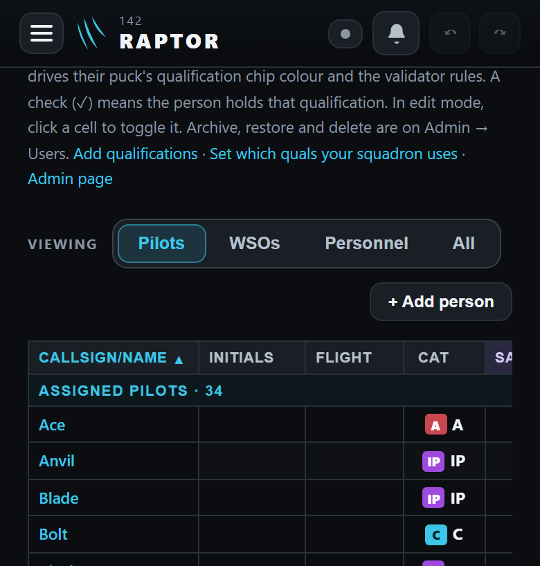

Logic

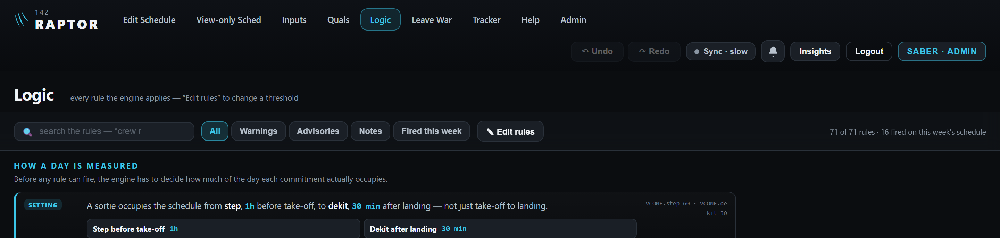
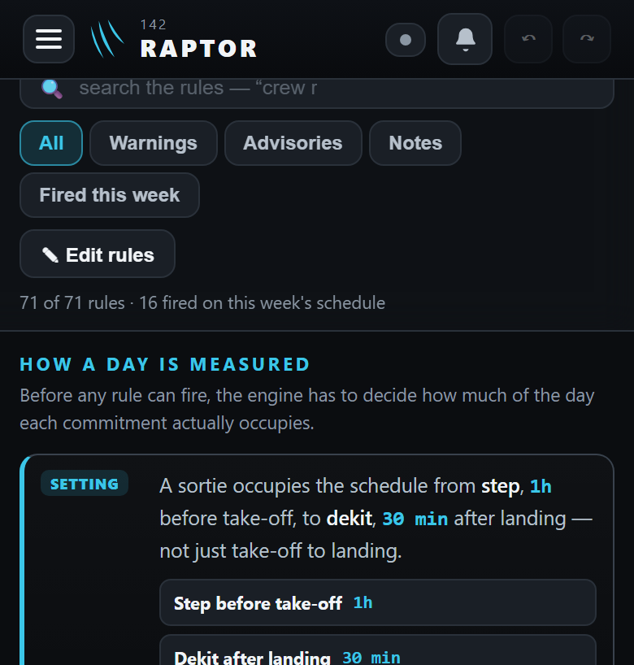

Admin

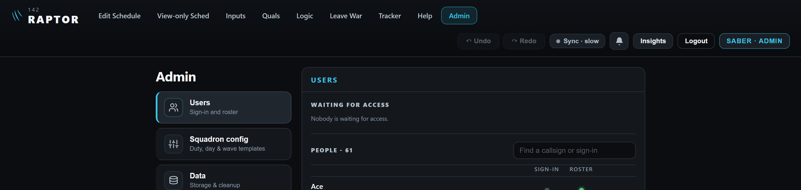
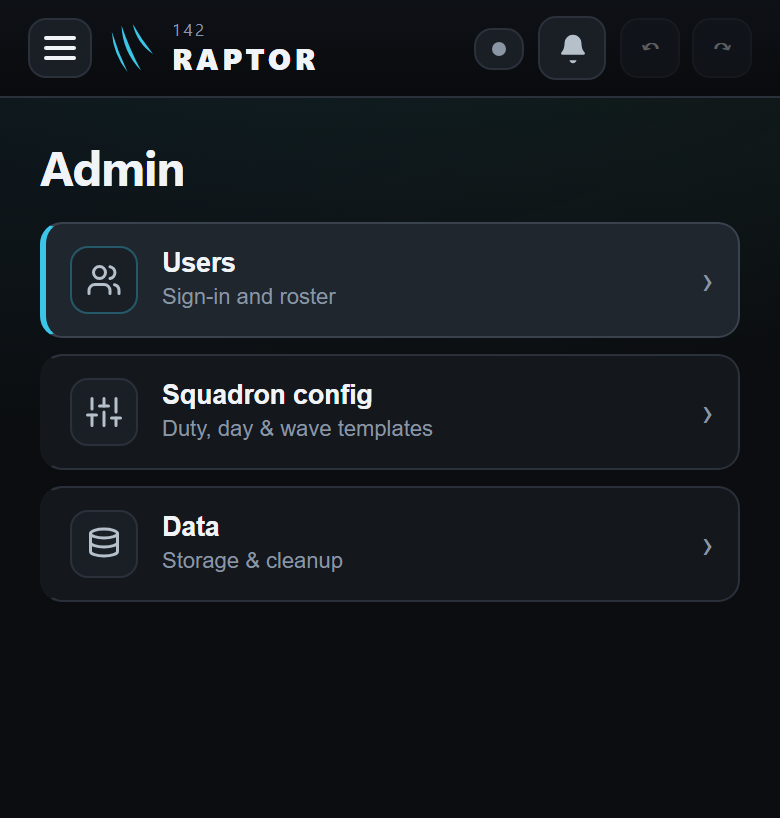

Tracker
Today the Tracker's own pair sits in its second row, smaller. After, it moves to the top bar and still undoes the Tracker's own changes.
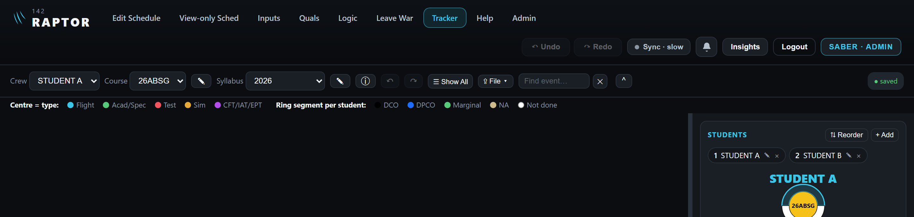
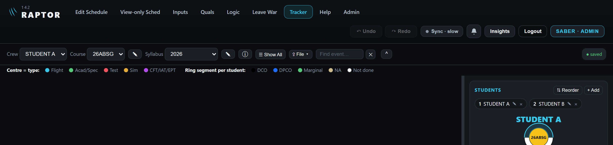
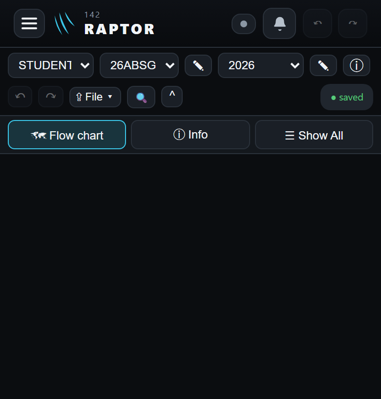
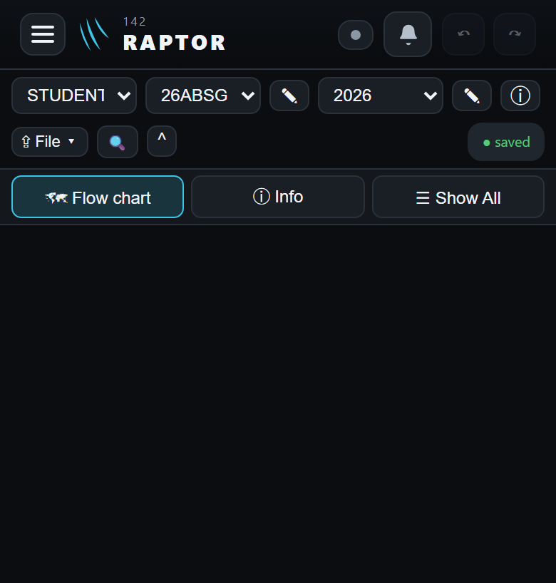
The scheduler board stays in its own bar
The board covers the whole screen, top bar included, so it keeps its own pair. It already follows Edit Schedule's order: Undo, Redo, then History. Nothing moves here.
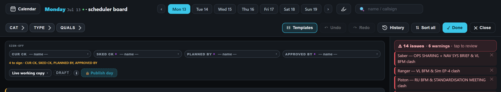
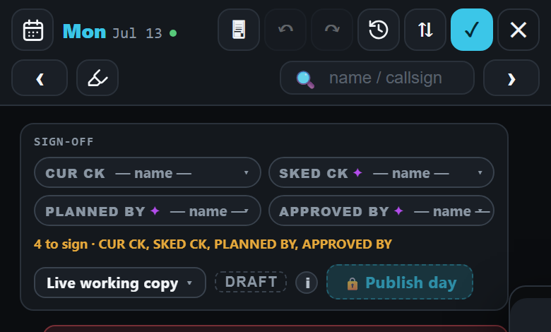
Your answer
- Approve as drawn, or name what to change.
- The Tracker (reading 7): move its pair to the top bar too? I recommend yes. It is what "all" means, and the Tracker's buttons then sit where every other page's do.
- The board (reading 6): keep its pair in its own bar, as drawn? I recommend yes.